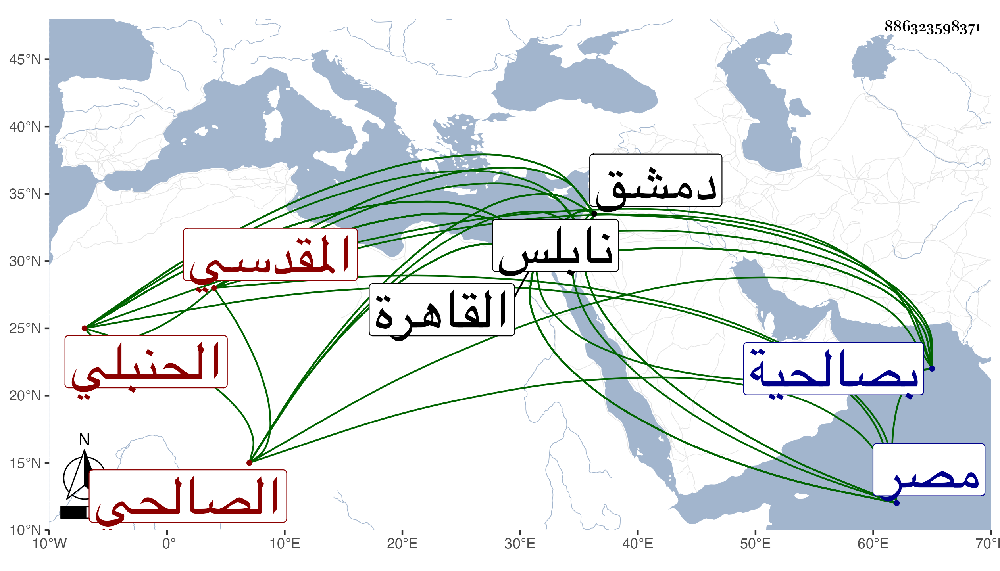

0902Sakhawi.DawLamic.ITO20230111-ara1.EIS1600.886323598371
Biography ID: 886323598371
12
محمد بن أحمد بن علي بن أحمد بن محمد بن التقي أبي الفضل سليمان بن حمزة بن أحمد بن عمر بن الشيخ أبي عمر محمد بن أحمد بن قدامة الشمس أبو عبد الله بن النجم بن الفخر بن النجم بن العز المقدسي الدمشقى الصالحي الحنبلي نزيل القاهرة . ويعرف بالخطيب ابن أبي عمر . ولد في عشية عيد الفطر سنة خمس وثمانمائة بصالحية دمشق ونشأ بها فقرأ القرآن على إبراهيم الخفاف الحنبلي أحد الصلحاء وحفظ الخرقى ، وقال أنه قرأ في الفقه على زوج أمه أبي شعر وغيره بدمشق وعلى المحب بن نصر الله بالقاهرة وأنه سمع على عائشة ابنة ابن عبد الهادي في السيرة بقراءة ابن موسى زاد غيره من الطلبة أنه وقف على سماعه عليها لقطعة من ذم الكلام للهروى بقراءة ابن موسى أيضا وأنه سمع على الجمال بن الشرائحي والشهاب بن حجي ، ومما سمعه على أولهما الجزء الأول من مشيخة الفخر . وقدم القاهرة مرارا أولها في سنة سبع وعشرين وسمع بها في صفر سنة خمس وأربعين بحضرة البدر البغدادي على ابن ناظر الصاحبة وابن الطحان وابن بردس وكذا حج جاور غير مرة أولها في سنة عشرين مع زوج أمه ثم في سنة ثمان وعشرين وسمع على ابن الجزري في مسند أحمد ومن ذلك الختم وعلى عائشة الكنانية عارية الكتب لليزدى ، وناب في القضاء ببلده عن ابن الحبال ثم بالقاهرة عن العز البغدادي فمن بعده وجلس بحانوت القصر وقتا ، وأضيف إليه بعد موت الشرف بن البدر البغدادي قضاء العسكر ثم بعد موت البدر نفسه تصدير بجامع عمرو وجهة يقال لها بلاطة بنابلس وولى خطابة الجامع الجديد بمصر والإمامة به وإعادة بالمنصورية واستيفاء جامع طولون وصار يكثر الخلطة بأهل المناوآت لذلك والإقامة عندهم وابتنى هناك مكانا والتصوف بالبرقوقية بل تحدث في استقراره في القضاء عقب البدر المشار إليه ثم ترشح له أيضا في أيام العز الكناني فكف الجمالي ناظر الخاص السلطان عن ولايته وعرفه بمكانته وكذا ذكر بعد موته لذلك فما تهيأ وتألم جدا وقد كتب بخطه الكثير كتاريخ ابن كثير وطبقات الحفاظ للذهبي والمغنى لابن قدامة والفروع لابن مفلح وربما أفتى بأخرة وهش وانجمع مع عدم دربة خبرة وسرعة بادرة ورغب من الاستيفاء وغيره وتردد إليه صغار الطلبة للسماع بحيث حدث بمسموعه من ذم الكلام وبغير ذلك ، وكتب على الاستدعاءات وكنت ممن حدث بحضرته بأشياء من جملتها مسموعه من ذم الكلام وهو من باب في ذكر أشياء من هذا الباب ظهرت على عهد رسول الله صلى الله عليه وسلم إلى الطبقة السادسة ومن قوله فيه إلى وأجاز لنا ولا زال في تناقص مقيما بالبرقوقية .
